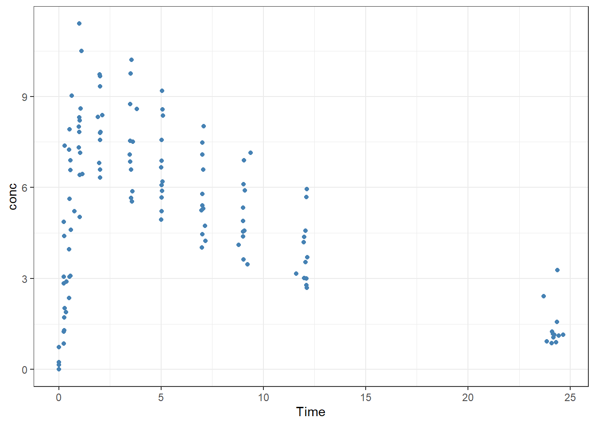
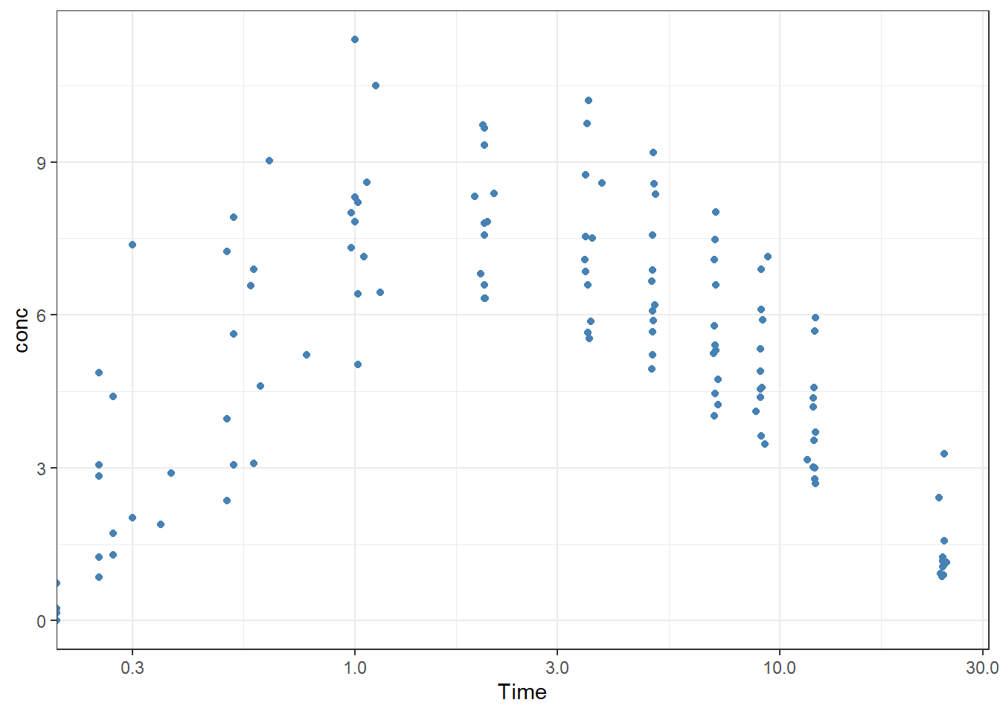
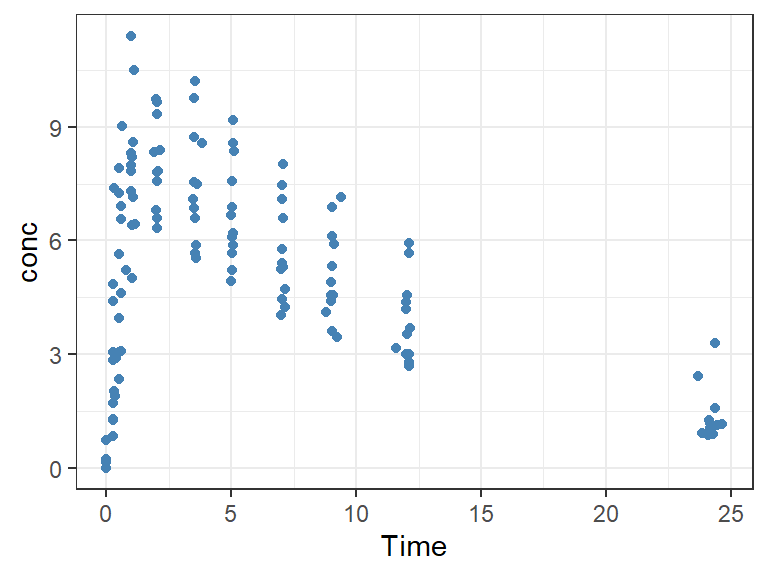

QUARTO ALL THE THINGS
First, let’s take a look at the dataset.
| Subject | Wt | Dose | Time | conc |
|---|---|---|---|---|
| 1 | 79.6 | 4.02 | 0.00 | 0.74 |
| 1 | 79.6 | 4.02 | 0.25 | 2.84 |
| 1 | 79.6 | 4.02 | 0.57 | 6.57 |
| 1 | 79.6 | 4.02 | 1.12 | 10.50 |
| 1 | 79.6 | 4.02 | 2.02 | 9.66 |
| 1 | 79.6 | 4.02 | 3.82 | 8.58 |
Let’s also look at a concentration time profile
p_ct <- Theoph %>%
ggplot(aes( x= Time, y = conc))+
geom_point(color = "steelblue")+
theme_bw()
p_ct
p_ct+ scale_x_log10()


As shown in Figure 1 (a), we have some interesting insights.We also have a semi-log representation in Figure 1 (b)

| Subject | cmax |
|---|---|
| 6 | 6.44 |
| 7 | 7.09 |
| 8 | 7.56 |
| 11 | 8.00 |
| 3 | 8.20 |
| 2 | 8.33 |
| 4 | 8.60 |
| 9 | 9.03 |
| 12 | 9.75 |
| 10 | 10.21 |
| 1 | 10.50 |
| 5 | 11.40 |
─ Session info ───────────────────────────────────────────────────────────────
setting value
version R version 4.3.3 (2024-02-29 ucrt)
os Windows 11 x64 (build 22631)
system x86_64, mingw32
ui RTerm
language (EN)
collate English_United States.utf8
ctype English_United States.utf8
tz America/New_York
date 2024-04-19
pandoc 3.1.1 @ C:/Program Files/RStudio/resources/app/bin/quarto/bin/tools/ (via rmarkdown)
─ Packages ───────────────────────────────────────────────────────────────────
package * version date (UTC) lib source
cli 3.6.2 2023-12-11 [1] CRAN (R 4.3.2)
colorspace 2.1-0 2023-01-23 [1] CRAN (R 4.3.2)
digest 0.6.35 2024-03-11 [1] CRAN (R 4.3.3)
dplyr * 1.1.4 2023-11-17 [1] CRAN (R 4.3.2)
evaluate 0.23 2023-11-01 [1] CRAN (R 4.3.2)
fansi 1.0.6 2023-12-08 [1] CRAN (R 4.3.2)
farver 2.1.1 2022-07-06 [1] CRAN (R 4.3.2)
fastmap 1.1.1 2023-02-24 [1] CRAN (R 4.3.2)
forcats * 1.0.0 2023-01-29 [1] CRAN (R 4.3.2)
generics 0.1.3 2022-07-05 [1] CRAN (R 4.3.2)
ggplot2 * 3.5.0 2024-02-23 [1] CRAN (R 4.3.2)
glue 1.7.0 2024-01-09 [1] CRAN (R 4.3.2)
gt * 0.10.1 2024-01-17 [1] CRAN (R 4.3.2)
gtable 0.3.4 2023-08-21 [1] CRAN (R 4.3.2)
hms 1.1.3 2023-03-21 [1] CRAN (R 4.3.2)
htmltools 0.5.8 2024-03-25 [1] CRAN (R 4.3.3)
htmlwidgets 1.6.4 2023-12-06 [1] CRAN (R 4.3.2)
jsonlite 1.8.8 2023-12-04 [1] CRAN (R 4.3.2)
knitr 1.45 2023-10-30 [1] CRAN (R 4.3.2)
labeling 0.4.3 2023-08-29 [1] CRAN (R 4.3.1)
lifecycle 1.0.4 2023-11-07 [1] CRAN (R 4.3.2)
lubridate * 1.9.3 2023-09-27 [1] CRAN (R 4.3.2)
magrittr 2.0.3 2022-03-30 [1] CRAN (R 4.3.2)
munsell 0.5.0 2018-06-12 [1] CRAN (R 4.3.2)
pillar 1.9.0 2023-03-22 [1] CRAN (R 4.3.2)
pkgconfig 2.0.3 2019-09-22 [1] CRAN (R 4.3.2)
purrr * 1.0.2 2023-08-10 [1] CRAN (R 4.3.2)
R6 2.5.1 2021-08-19 [1] CRAN (R 4.3.2)
readr * 2.1.5 2024-01-10 [1] CRAN (R 4.3.2)
rlang 1.1.3 2024-01-10 [1] CRAN (R 4.3.2)
rmarkdown 2.26 2024-03-05 [1] CRAN (R 4.3.2)
rstudioapi 0.16.0 2024-03-24 [1] CRAN (R 4.3.3)
sass 0.4.9 2024-03-15 [1] CRAN (R 4.3.3)
scales 1.3.0 2023-11-28 [1] CRAN (R 4.3.2)
sessioninfo 1.2.2 2021-12-06 [1] CRAN (R 4.3.2)
stringi 1.8.3 2023-12-11 [1] CRAN (R 4.3.2)
stringr * 1.5.1 2023-11-14 [1] CRAN (R 4.3.2)
tibble * 3.2.1 2023-03-20 [1] CRAN (R 4.3.2)
tidyr * 1.3.1 2024-01-24 [1] CRAN (R 4.3.2)
tidyselect 1.2.1 2024-03-11 [1] CRAN (R 4.3.3)
tidyverse * 2.0.0 2023-02-22 [1] CRAN (R 4.3.2)
timechange 0.3.0 2024-01-18 [1] CRAN (R 4.3.2)
tzdb 0.4.0 2023-05-12 [1] CRAN (R 4.3.2)
utf8 1.2.4 2023-10-22 [1] CRAN (R 4.3.2)
vctrs 0.6.5 2023-12-01 [1] CRAN (R 4.3.2)
withr 3.0.0 2024-01-16 [1] CRAN (R 4.3.2)
xfun 0.43 2024-03-25 [1] CRAN (R 4.3.3)
xml2 1.3.6 2023-12-04 [1] CRAN (R 4.3.2)
yaml 2.3.8 2023-12-11 [1] CRAN (R 4.3.2)
[1] C:/Users/KAsab/AppData/Local/R/win-library/4.3
[2] C:/Program Files/R/R-4.3.3/library
──────────────────────────────────────────────────────────────────────────────